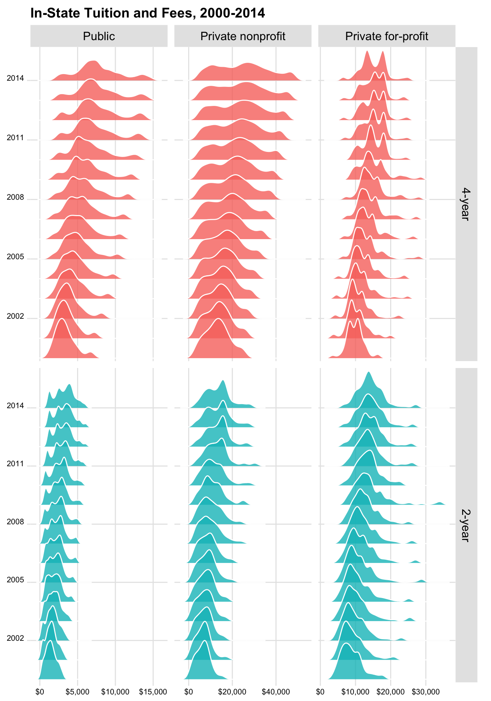
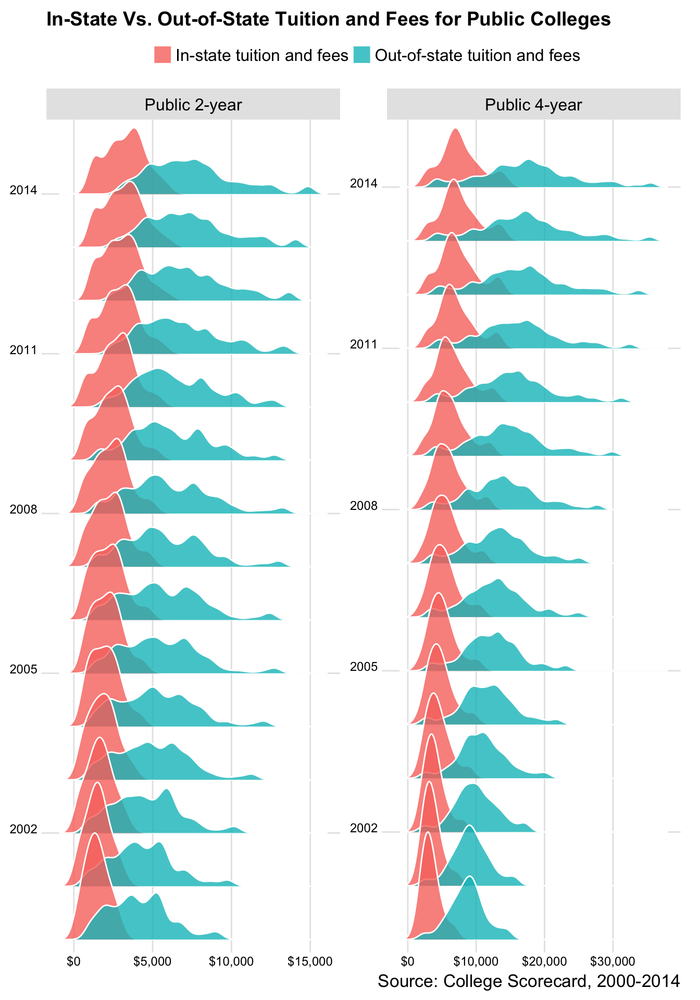

The scorecard package includes processed datasets from the College Scorecard, 1996-2015.
The Scorecard datasets are imbalance panels at the colleges-by-school-year level. The data was last updated in 2017. See the changelog for more details.
The following datasets are available:
scorecard::mf1996_97scorecard::mf1997_98scorecard::mf1998_99scorecard::mf1999_00scorecard::mf2000_01scorecard::mf2001_02scorecard::mf2002_03scorecard::mf2003_04scorecard::mf2004_05scorecard::mf2005_06scorecard::mf2006_07scorecard::mf2007_08scorecard::mf2008_09scorecard::mf2009_10scorecard::mf2010_11scorecard::mf2011_12scorecard::mf2012_13scorecard::mf2013_14scorecard::mf2014_15scorecard::mf2015_16scorecard::codebookscorecard::cohort_map
The following functions are implemented:
-
scorecard::attach_var_label(): Assign variable labels. -
scorecard::attach_val_label(): Assign value labels for certain variables
Installation
You can also download the datasets as an R package. It might take a while to install and load into memory. To download the most recent stable release, use
# install.packages("devtools")
devtools::install_github("jjchern/scorecard@v0.3.0")
# To uninstall the package, use:
# remove.packages("scorecard")Examples
Loading the merged file for school year 2014-15
All datasets are tibbles:
library(tidyverse)
scorecard::mf2014_15
#> # A tibble: 7,703 x 1,744
#> mf_year unitid opeid opeid6 instnm
#> <chr> <chr> <chr> <chr> <chr>
#> 1 2014-15 100654 00100200 001002 Alabama A & M University
#> 2 2014-15 100663 00105200 001052 University of Alabama at Birmingham
#> 3 2014-15 100690 02503400 025034 Amridge University
#> 4 2014-15 100706 00105500 001055 University of Alabama in Huntsville
#> 5 2014-15 100724 00100500 001005 Alabama State University
#> 6 2014-15 100751 00105100 001051 The University of Alabama
#> 7 2014-15 100760 00100700 001007 Central Alabama Community College
#> 8 2014-15 100812 00100800 001008 Athens State University
#> 9 2014-15 100830 00831000 008310 Auburn University at Montgomery
#> 10 2014-15 100858 00100900 001009 Auburn University
#> # ... with 7,693 more rows, and 1739 more variables: city <chr>,
#> # stabbr <chr>, zip <chr>, accredagency <chr>, insturl <chr>,
#> # npcurl <chr>, sch_deg <chr>, hcm2 <dbl>, main <dbl+lbl>,
#> # numbranch <dbl>, preddeg <dbl+lbl>, highdeg <dbl+lbl>,
#> # control <dbl+lbl>, st_fips <dbl+lbl>, region <dbl+lbl>,
#> # locale <dbl+lbl>, locale2 <dbl+lbl>, latitude <dbl>, longitude <dbl>,
#> # ccbasic <dbl+lbl>, ccugprof <dbl+lbl>, ccsizset <dbl+lbl>,
#> # hbcu <dbl+lbl>, pbi <dbl+lbl>, annhi <dbl+lbl>, tribal <dbl+lbl>,
#> # aanapii <dbl+lbl>, hsi <dbl+lbl>, nanti <dbl+lbl>, menonly <dbl+lbl>,
#> # womenonly <dbl+lbl>, relaffil <dbl+lbl>, adm_rate <dbl>,
#> # adm_rate_all <dbl>, satvr25 <dbl>, satvr75 <dbl>, satmt25 <dbl>,
#> # satmt75 <dbl>, satwr25 <dbl>, satwr75 <dbl>, satvrmid <dbl>,
#> # satmtmid <dbl>, satwrmid <dbl>, actcm25 <dbl>, actcm75 <dbl>,
#> # acten25 <dbl>, acten75 <dbl>, actmt25 <dbl>, actmt75 <dbl>,
#> # actwr25 <dbl>, actwr75 <dbl>, actcmmid <dbl>, actenmid <dbl>,
#> # actmtmid <dbl>, actwrmid <dbl>, sat_avg <dbl>, sat_avg_all <dbl>,
#> # pcip01 <dbl>, pcip03 <dbl>, pcip04 <dbl>, pcip05 <dbl>, pcip09 <dbl>,
#> # pcip10 <dbl>, pcip11 <dbl>, pcip12 <dbl>, pcip13 <dbl>, pcip14 <dbl>,
#> # pcip15 <dbl>, pcip16 <dbl>, pcip19 <dbl>, pcip22 <dbl>, pcip23 <dbl>,
#> # pcip24 <dbl>, pcip25 <dbl>, pcip26 <dbl>, pcip27 <dbl>, pcip29 <dbl>,
#> # pcip30 <dbl>, pcip31 <dbl>, pcip38 <dbl>, pcip39 <dbl>, pcip40 <dbl>,
#> # pcip41 <dbl>, pcip42 <dbl>, pcip43 <dbl>, pcip44 <dbl>, pcip45 <dbl>,
#> # pcip46 <dbl>, pcip47 <dbl>, pcip48 <dbl>, pcip49 <dbl>, pcip50 <dbl>,
#> # pcip51 <dbl>, pcip52 <dbl>, pcip54 <dbl>, cip01cert1 <dbl+lbl>,
#> # cip01cert2 <dbl+lbl>, cip01assoc <dbl+lbl>, cip01cert4 <dbl>,
#> # cip01bachl <dbl>, ...Working with variable and value labels
All the datasets have variable labels attached, which can be viewed in RStudio’s Data Viewer:
View(scorecard::mf2014_15)You can also use the labelled package:
scorecard::mf2014_15 %>%
select(1:8) %>%
labelled::var_label()
#> $mf_year
#> NULL
#>
#> $unitid
#> [1] "Unit ID for institution"
#>
#> $opeid
#> [1] "8-digit OPE ID for institution"
#>
#> $opeid6
#> [1] "6-digit OPE ID for institution"
#>
#> $instnm
#> [1] "Institution name"
#>
#> $city
#> [1] "City"
#>
#> $stabbr
#> [1] "State postcode"
#>
#> $zip
#> [1] "ZIP code"Or work with the codebook directly:
## Show variable labels
scorecard::codebook %>%
select(var_name, var_label)
#> # A tibble: 1,975 x 2
#> var_name var_label
#> <chr> <chr>
#> 1 unitid Unit ID for institution
#> 2 opeid 8-digit OPE ID for institution
#> 3 opeid6 6-digit OPE ID for institution
#> 4 instnm Institution name
#> 5 city City
#> 6 stabbr State postcode
#> 7 zip ZIP code
#> 8 accredagency Accreditor for institution
#> 9 insturl URL for institution's homepage
#> 10 npcurl URL for institution's net price calculator
#> # ... with 1,965 more rows
## Build a small function to shown value labels
show_val_label = . %>% {
filter(scorecard::codebook, var_name == .) %>%
mutate(val_label = glue::glue("{val_label} = {value}")) %>%
distinct(val_label)}
## Show value labels:
show_val_label("curroper")
#> # A tibble: 2 x 1
#> val_label
#> <chr>
#> 1 Not currently certified as an operating institution = 0
#> 2 Currently certified as operating = 1
show_val_label("distanceonly")
#> # A tibble: 2 x 1
#> val_label
#> <chr>
#> 1 Not distance-education only = 0
#> 2 Distance-education only = 1In binding multiple years of data with dyplr::bind_rows(), however, labels will get dropped. To throw back the labels, scorecard also provides to simple functions that attach variable and value labels to the tibbles:
bind_rows(
scorecard::mf2014_15 %>% select(mf_year, instnm, control, adm_rate),
scorecard::mf2013_14 %>% select(mf_year, instnm, control, adm_rate)
) %>%
scorecard::attach_var_label() %>%
scorecard::attach_val_label() -> df
df
#> # A tibble: 15,507 x 4
#> mf_year instnm control adm_rate
#> <chr> <chr> <dbl+lbl> <dbl>
#> 1 2014-15 Alabama A & M University 1 0.5256
#> 2 2014-15 University of Alabama at Birmingham 1 0.8569
#> 3 2014-15 Amridge University 2 NA
#> 4 2014-15 University of Alabama in Huntsville 1 0.8203
#> 5 2014-15 Alabama State University 1 0.5326
#> 6 2014-15 The University of Alabama 1 0.5105
#> 7 2014-15 Central Alabama Community College 1 NA
#> 8 2014-15 Athens State University 1 NA
#> 9 2014-15 Auburn University at Montgomery 1 0.8017
#> 10 2014-15 Auburn University 1 0.8347
#> # ... with 15,497 more rows
labelled::var_label(df)
#> $mf_year
#> NULL
#>
#> $instnm
#> [1] "Institution name"
#>
#> $control
#> [1] "Control of institution"
#>
#> $adm_rate
#> [1] "Admission rate"
labelled::val_labels(df)
#> $mf_year
#> NULL
#>
#> $instnm
#> NULL
#>
#> $control
#> Public Private nonprofit Private for-profit
#> 1 2 3
#>
#> $adm_rate
#> NULLExploring codebook and plot in-state tuition with a joyplot
vars = c("mf_year", "iclevel", "control", "tuitionfee_in")
scorecard::codebook %>%
select(var_name, var_label, value, val_label) %>%
filter(var_name %in% vars) %>%
knitr::kable()| var_name | var_label | value | val_label |
|---|---|---|---|
| control | Control of institution | 1 | Public |
| control | Control of institution | 2 | Private nonprofit |
| control | Control of institution | 3 | Private for-profit |
| tuitionfee_in | In-state tuition and fees | NA | NA |
| iclevel | Level of institution | 1 | 4-year |
| iclevel | Level of institution | 2 | 2-year |
| iclevel | Level of institution | 3 | Less-than-2-year |
dplyr_seq = . %>%
select(one_of(vars)) %>%
haven::as_factor() %>%
filter(iclevel %in% c("4-year", "2-year")) %>%
mutate(year = mf_year %>% parse_number() %>% as.factor()) %>%
group_by(iclevel, control) %>%
mutate_at(c("tuitionfee_in"),
~statar::winsorise(., probs = c(0.02, 0.98), verbose = FALSE)) %>%
ungroup()
## Test the functional sequence
scorecard::mf2014_15 %>% dplyr_seq()
#> # A tibble: 5,530 x 5
#> mf_year iclevel control tuitionfee_in year
#> <chr> <fctr> <fctr> <dbl> <fctr>
#> 1 2014-15 4-year Public 9096 2014
#> 2 2014-15 4-year Public 7510 2014
#> 3 2014-15 4-year Private nonprofit 6900 2014
#> 4 2014-15 4-year Public 9158 2014
#> 5 2014-15 4-year Public 8720 2014
#> 6 2014-15 4-year Public 9826 2014
#> 7 2014-15 2-year Public 3491 2014
#> 8 2014-15 4-year Public NA 2014
#> 9 2014-15 4-year Public 9080 2014
#> 10 2014-15 4-year Public 10200 2014
#> # ... with 5,520 more rows
bind_rows(
scorecard::mf2014_15 %>% dplyr_seq(),
scorecard::mf2013_14 %>% dplyr_seq(),
scorecard::mf2012_13 %>% dplyr_seq(),
scorecard::mf2011_12 %>% dplyr_seq(),
scorecard::mf2010_11 %>% dplyr_seq(),
scorecard::mf2009_10 %>% dplyr_seq(),
scorecard::mf2008_09 %>% dplyr_seq(),
scorecard::mf2007_08 %>% dplyr_seq(),
scorecard::mf2006_07 %>% dplyr_seq(),
scorecard::mf2005_06 %>% dplyr_seq(),
scorecard::mf2004_05 %>% dplyr_seq(),
scorecard::mf2003_04 %>% dplyr_seq(),
scorecard::mf2002_03 %>% dplyr_seq(),
scorecard::mf2001_02 %>% dplyr_seq(),
scorecard::mf2000_01 %>% dplyr_seq()
) -> df
df %>%
ggplot(aes(x = tuitionfee_in, y = year, fill = iclevel)) +
ggjoy::geom_joy(scale = 2, alpha = .8, colour = "white") +
ggjoy::theme_joy() +
facet_grid(iclevel~control, scales = "free") +
labs(x = NULL, y = NULL,
title = "In-State Tuition and Fees, 2000-2014") +
scale_x_continuous(labels = scales::dollar) +
scale_y_discrete(breaks = seq(2014, 2000, -3),
expand = c(0.01, 0)) +
theme(axis.text = element_text(size = 8),
legend.position = "none")
Compareing in-state and out-of-state tuition and fees
vars = c("mf_year", "iclevel", "control", "tuitionfee_in", "tuitionfee_out")
dplyr_seq = . %>%
select(one_of(vars)) %>%
haven::as_factor() %>%
filter(iclevel %in% c("4-year", "2-year")) %>%
filter(control == "Public") %>%
mutate(type = paste(control, iclevel)) %>%
mutate(year = mf_year %>% parse_number() %>% as.factor()) %>%
group_by(type) %>%
mutate_at(c("tuitionfee_in", "tuitionfee_out"),
~statar::winsorise(., probs = c(0.02, 0.98), verbose = FALSE)) %>%
ungroup() %>%
gather(in_or_out, tuitionfee, tuitionfee_in:tuitionfee_out) %>%
mutate(in_or_out = if_else(in_or_out == "tuitionfee_in",
"In-state tuition and fees",
"Out-of-state tuition and fees"))
## Test the functional sequence
scorecard::mf2014_15 %>% dplyr_seq()
#> # A tibble: 3,600 x 7
#> mf_year iclevel control type year in_or_out
#> <chr> <fctr> <fctr> <chr> <fctr> <chr>
#> 1 2014-15 4-year Public Public 4-year 2014 In-state tuition and fees
#> 2 2014-15 4-year Public Public 4-year 2014 In-state tuition and fees
#> 3 2014-15 4-year Public Public 4-year 2014 In-state tuition and fees
#> 4 2014-15 4-year Public Public 4-year 2014 In-state tuition and fees
#> 5 2014-15 4-year Public Public 4-year 2014 In-state tuition and fees
#> 6 2014-15 2-year Public Public 2-year 2014 In-state tuition and fees
#> 7 2014-15 4-year Public Public 4-year 2014 In-state tuition and fees
#> 8 2014-15 4-year Public Public 4-year 2014 In-state tuition and fees
#> 9 2014-15 4-year Public Public 4-year 2014 In-state tuition and fees
#> 10 2014-15 2-year Public Public 2-year 2014 In-state tuition and fees
#> # ... with 3,590 more rows, and 1 more variables: tuitionfee <dbl>
bind_rows(
scorecard::mf2014_15 %>% dplyr_seq(),
scorecard::mf2013_14 %>% dplyr_seq(),
scorecard::mf2012_13 %>% dplyr_seq(),
scorecard::mf2011_12 %>% dplyr_seq(),
scorecard::mf2010_11 %>% dplyr_seq(),
scorecard::mf2009_10 %>% dplyr_seq(),
scorecard::mf2008_09 %>% dplyr_seq(),
scorecard::mf2007_08 %>% dplyr_seq(),
scorecard::mf2006_07 %>% dplyr_seq(),
scorecard::mf2005_06 %>% dplyr_seq(),
scorecard::mf2004_05 %>% dplyr_seq(),
scorecard::mf2003_04 %>% dplyr_seq(),
scorecard::mf2002_03 %>% dplyr_seq(),
scorecard::mf2001_02 %>% dplyr_seq(),
scorecard::mf2000_01 %>% dplyr_seq()
) -> df
df %>%
ggplot(aes(x = tuitionfee, y = year, fill = in_or_out)) +
ggjoy::geom_joy(scale = 2, alpha = .8, colour = "white") +
ggjoy::theme_joy() +
facet_wrap(~type, scales = "free") +
labs(x = NULL, y = NULL,
title = "In-State Vs. Out-of-State Tuition and Fees for Public Colleges",
caption = "Source: College Scorecard, 2000-2014") +
scale_x_continuous(labels = scales::dollar) +
scale_y_discrete(breaks = seq(2014, 2000, -3),
expand = c(0.01, 0)) +
theme(axis.text = element_text(size = 9),
legend.position = "top",
legend.title = element_blank(),
legend.justification = "center")